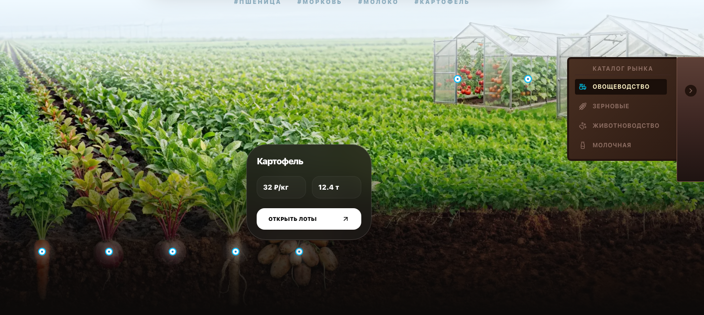

AgroConnect
Я — Закирзянов Самат Расихович, автор и разработчик B2B-платформы для фермеров и закупщиков.
В публичной витрине я показываю интерфейс, архитектуру и инженерные решения проекта.

Проект не завершён. Перед промышленным запуском я планирую завершить системную приёмку и эксплуатационные испытания. Основной код остаётся закрытым.